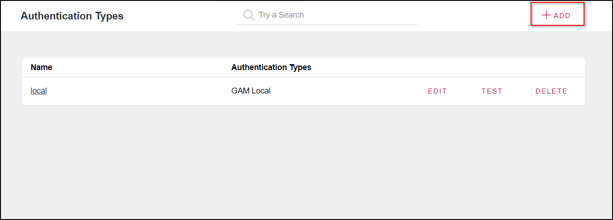

GAM - One Time Password (OTP)
For each authentication, it is possible to try to generate a temporary password and send it by email or SMS to the specified user in the login form. This is known as One Time Password (OTP).
OTP aims to provide an easy way to authenticate in applications and help users log in without using a password so that it is not necessary to remember it or use password managers.
Its purpose is to get around the reluctance to have a password and memorize it. OTP gives the possibility to have users authenticated with random passwords in each login process. This allows users to access the application in a safe way, by only remembering their nick/email.
How it works
When a user authenticates in a web app, a password is generated and an email/SMS is sent with the generated password. By default, GAM sends passwords by email; however, you can customize how codes are sent to users. For example, you can send the passwords by SMS.
The same steps apply to mobile applications.
The self-generated password must not be expired and can be used for a single login. For security reasons, OTP must have an expiration date. The expiration time can be set by the application administrator.
GAM requirements to use OTP
To allow a user to use OTP, the user must exist in GeneXus Access Manager (GAM). The user must be previously registered, and the authenticity of the method used to receive the OTP should have been validated – either the email or the SMS to verify that it is actually from the registered user. This means that you cannot create new users through OTP.
A user who logs in with OTP is impersonating a user that already exists in GAM with some other authentication type.
Steps to set up OTP
One Time Password is an authentication type, so to implement it you have to add it as another authentication type.
The following example shows the minimum requirements for OTP implementation.
Adding OTP authentication type
- Step 1 - In the GAM menu, select SETTINGS > AUTHENTICATION TYPES.
- Step 2 - Click on the ADD option.

- Step 3 - In the Combo Box, select One Time Password. After this, a form is going to be shown.
- Step 4 - In the form, you must give a Name, select the "Enabled?" checkbox, and select the "Use For First Factor Authentication" checkbox (shown as #2 in the image).
OTP properties
The following table describes the OTP properties. The number that precedes each property corresponds to the number shown in the image above.
|
Property |
Description |
|
1- Impersonate |
Authentication type where users are going to be validated when using OTP. Users must already exist. |
|
2- UseForFirstFactorAuthentication |
Sets whether this login method is used as the first-factor authentication. If you don't set this property, OTP could only be used as a second factor. |
|
3- EventValidUser |
Developer event for validating that the user who asked for an OTP is allowed to do it. |
|
4- AutogeneratedCodeLength |
Auto-generated key length (between 3 and 32). Default = 6. |
|
5- GenerateCodeOnlyNumbers |
Only numeric auto-generated key. Default = True. |
|
6- CodeExpirationTimeout |
OTP key lifetime (in seconds). Default = 1800. Minimum value = 10. |
|
7- MaximumDailyNumberCodes |
Maximum number of daily OTPs. 0 = unlimited. Default = 12. |
|
8- NumberUnsuccessfulRetriesToLockOTP |
Number of failed retries to lock the sending of OTPs to the user. 0 = never. Default = 3. |
|
9-NumberUnsuccessfulRetriesToBlockUserBasedOfOTPLocks |
Number of failed retries to block the user. |
|
10- AutoUnlockTime |
Time to unlock the user OTP (in minutes) Default = 60. If 0 is set, the user keeps locked until an administrator unlocks the user. |
|
11-EventSendCode |
Developer event to send the OTP key. Empty property value means that GAM will send OTP by email. |
|
12-Empty property EventSendCode |
Empty property value means that GAM will send OTP by email. Also, the “GAM - Email” option will be displayed and a combo box containing "GAMEvents.User_OneTimePasswordSendCode" GAM Event will be listed. |
|
13-MailMessageSubject (Only if EventSendCode is empty) |
Subject of the email that the user will receive. In the subject, “%1” is a way to indicate that the app name is going to be in that place. |
|
14-MailMessageBodyHTML (Only if EventSendCode is empty) |
Message sent to the user (Allows HTML code). If it contains “%1”, the name of the app will be sent in that place. “%2” is the place where the OTPCode will be located. Just writing “%1” will only send the OTPCode. |
|
15-EventValidateCode |
Developer event to validate the OTPCode. It is a combo box with the first option as “GAM”, then a list of GAM events of GAMEvents.User_OneTimePasswordValidateCode type. If nothing is set, GAM will validate OTP with the key stored in the database table. If there is a proc selected, a GAM event will be executed. |
Custom One Time Password
Some events of the OTP behavior can be customized. You don't have to customize all the events, so if you have to change one of the four events' behavior, you can do it. The events are as follows:
- User validation. Number 3 in the table above.
- Code generation.
- Code sending. Number 11 in the table above.
- Code validation. Number 15 in the table above.
In order to implement these events, you have to subscribe to them in the GAM backend.
How to implement a Custom OTP
- Step 1: You have to subscribe to each of the events that you want to be related to the OTP custom action.
The following image shows an example of the GAM Events Subscription.

- Step 2: Add a One Time Password authentication type, and select "Code Generation Type" = OTP Custom.
In the following image, it is number 1.
- Step 3: Choose the events that you want to be customized. In the image, numbers 2,3,4,5 are the inputs that belong to the customizable events.
As you can see, the names of the contents of those inputs are the names of the events that were added in Step 1.
Events' data
This section describes the different GAM events that you can subscribe to.
For each event, the receiving object is GAMOTPEventSubscription.
- Received event
GAMOTPEventSubscription:
{
"ApplicationId": 2
"UserGUID": "3f471dce-cbcc-4467-a269-77f39a4132d7"
"OTPCode" : ""
}
- In case of a successful event
GAMOTPEventSubscription:
{
"ApplicationId": 2
"UserGUID": "3f471dce-cbcc-4467-a269-77f39a4132d7"
"OTPCode" : "123456"
}
- In case of an unsuccessful event
GAMError:
{
"Code": 440,
"Message": "OTP custom event error when generating code"
}
GAMEvents.User_OneTimePasswordValidateUser
If the GeneXus developer builds a proc to customize this action, the event proc must have: Parm(in:&EventName, in:&JsonIN, out:&JsonOUT);
This event gets in the &JsonIN a JSON from the GAMOTPEventSubscription object containing the ApplicationID and UserGUID. If there is an error, a JSON with the GAMError format object must be retrieved from &JsonOUT.
On the other hand, if the response is correct, &JsonOUT will retrieve nothing.
GAMEvents.User_OneTimePasswordGenerateCode
if the GeneXus developer builds a procedure to customize the password generation process, the event procedure will have: Parm(in:&EventName, in:&JsonIN, out:&JsonOUT);
This event receives &JsonIN with a JSON of the GAMOTPEventSubscription object with ApplicationID and the UserGUID.
If there is an error, &JsonOUT will retrieve a JSON with GAMError format. On the other hand, if there is no error the &JsonOUT will retrieve a JSON with the 3 attributes of GAMOTPEventSubscription object, and with data in the OTPCode field.
GAMEvents.User_OneTimePasswordSendCode
This event only allows customizing the way that the OTPCode is sent to the user (SMS, email, etc).
An email server is required if GAM Email send is set. This configuration can be done by going to “Repository Configuration” > “Email”.
If the GeneXus developer builds a proc to customize this action, the event proc must have Parm(in:&EventName, in:&JsonIN, out:&JsonOUT). This event gets in the &JsonIN a JSON from the GAMOTPEventSubscription object containing the ApplicationID, UserGUID, and OTPCode. If there is an error, from &JsonOUT a JSON must be retrieved with the GAMError format object.
On the other hand, if the response is correct, &JsonOUT will retrieve nothing.
GAMEvents.User_OneTimePasswordValidateCode
If nothing is set, GAM will validate OTP with the key stored in its database table.
For the cases where the GeneXus user develops a proc to customize something, if the event selected is executed, the proc will also be executed.
If the GeneXus developer builds a proc to customize this action, the event proc must have Parm(in:&EventName, in:&JsonIN, out:&JsonOUT). This event gets in the &JsonIN a JSON from the GAMOTPEventSubscription object containing the ApplicationID, UserGUID, and OTPCode. If there is an error, from &JsonOUT a JSON will be retrieved with the GAMError format object. On the other hand, if there is no error, nothing will be retrieved.
This event only allows customizing the OTPCode validation by the developer; once this validation is done correctly, GAM will also validate it.
Custom OTP event example
The following code is an example of a procedure that was set to trigger in custom OTP while the code is being validated.
Case &EventName = GAMEvents.User_OneTimePasswordValidateCode
&GAMOTPEventSubscription.FromJsonString(&JsonIN)
Msg("TRACE-GAMEventTest - User_OneTimePasswordValidateCode - &GAMOTPEventSubscription:" + &GAMOTPEventSubscription.ToJsonString() ,status)
&GAMUser.Load(&GAMOTPEventSubscription.UserGUID)
If &GAMUser.Success()
If &GAMUser.EMail.Trim() = !"user@example.com"
If not &GAMOTPEventSubscription.OTPCode.IsEmpty()
If &GAMOTPEventSubscription.OTPCode = "123456"
//Success validation !!!
Msg("TRACE-GAMEventTest - User_OneTimePasswordValidateCode - OK1:" + &GAMOTPEventSubscription.OTPCode + " Email:" + &GAMUser.EMail ,status)
Else
&GAMError.Code = GAMErrorMessages.UserInactive
&GAMError.Message = "the code is not valid. try again. THIS IS A CUSTOM MESSAGE :)"
&JsonOUT = &GAMError.ToJsonString()
Endif
Else
&GAMError.Code = GAMErrorMessages.UserInactive
&GAMError.Message = "Error validating code. could not get the code."
&JsonOUT = &GAMError.ToJsonString()
Endif
Else
//Code validation ok !!!
Msg("TRACE-GAMEventTest - User_OneTimePasswordValidateCode - OK2:" + &GAMOTPEventSubscription.OTPCode + " Email:" + &GAMUser.EMail ,status)
Endif
Else
&GAMError.Code = GAMErrorMessages.UserInactive
&GAMError.Message = "User does not exists, verify user name."
&JsonOUT = &GAMError.ToJsonString()
Endif
EndCase
Unblock users method
GAMUser.UnblockOTPCodes(&Errors)
Email server configuration
Here you can see how to set an SMTP server with Google. Many of the configurations that you will see in the example below were done based on Google SMTP server.
- Step 1 - To add a new email server, go to SETTINGS > REPOSITORY CONFIGURATION > Email.
- Step 2 - The required properties to set the email server are:
-
Email server host
-
Email server port
-
Email server Secure
-
Email server secure
-
Email server use authentication
-
Email server authentication User name
-
Email server authentication User password
-

Application name
The name of the application is set in SETTINGS > REPOSITORY CONFIGURATION.
Here, there is a form with an input "Name". It refers to the application name.
Web application
The following code represents how OTP is implemented in the web app login.
Event 'GAM-OneTimePassword' &AdditionalParameter.AuthenticationTypeName = !"gam-otp-web" &AdditionalParameter.OTPStep = 1 &LoginOK = GAMRepository.Login(&UserName, &UserPassword_nula, &AdditionalParameter, &Errors ) If &LoginOK &URL = GAMRepository.GetLastErrorsURL() If &URL.IsEmpty() GAMHome() Else Link(&URL) Endif Else If &Errors.Count > 0 If (&Errors.Item(1).Code = GAMErrorMessages.UserAccessCodeSent) //Error 400 &UserName.Enable = False &UserOTP.Enable = True Login.Caption = "Send Access Code" Endif Endif Endif Endevent
If you just want to have the OTP authentication, the code of the WebPanel will look as shown below:
Event 'GAM-OneTimePassword-Step2' &AdditionalParameter.AuthenticationTypeName = !"gam-otp-web" &AdditionalParameter.OTPStep = 2 &LoginOK = GAMRepository.Login(&UserName, &User_OTP, &AdditionalParameter, &Errors ) Endevent
Smart devices
The following code represents how OTP is implemented in smart devices login.
Event 'GAM-OneTimePassword-Step1' Composite &LoginExternalAdditionalParameters.AuthenticationTypeName = !"gam-otp-sd" &LoginExternalAdditionalParameters.OTPStep = 1 GeneXus.SD.Actions.LoginExternal(GAMAuthenticationTypes.GAMOTP, &UserName, &Password_nula, &LoginExternalAdditionalParameters) EndComposite Endevent
Availability
Since GeneXus 17 Upgrade 5.
See Also
GAM - One Time Password for mobile